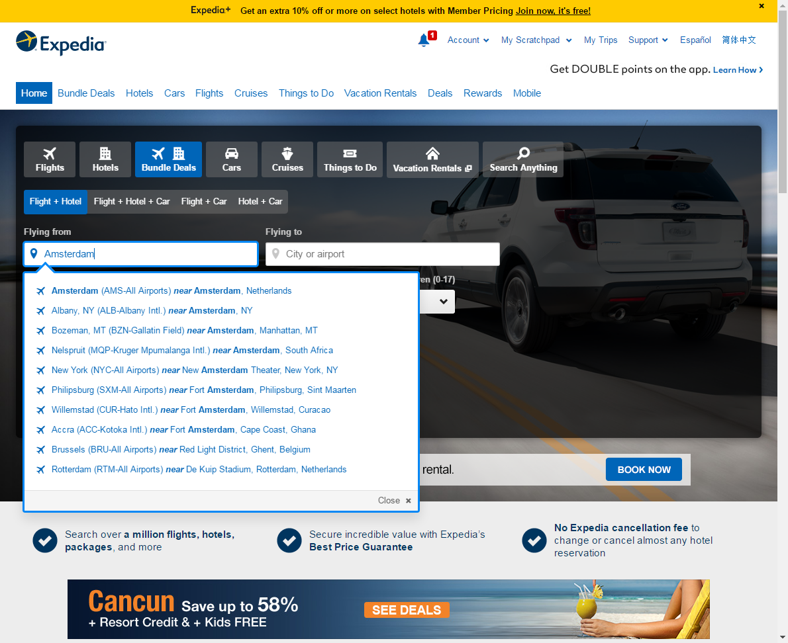
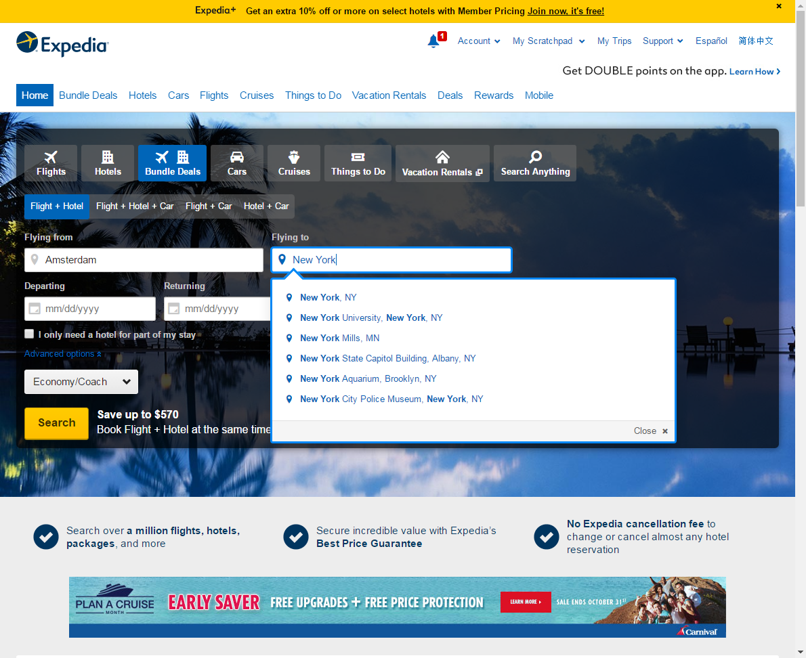
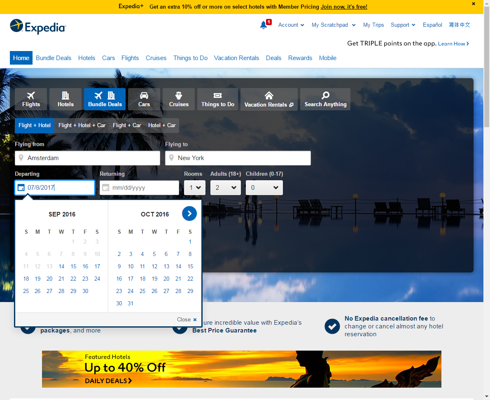
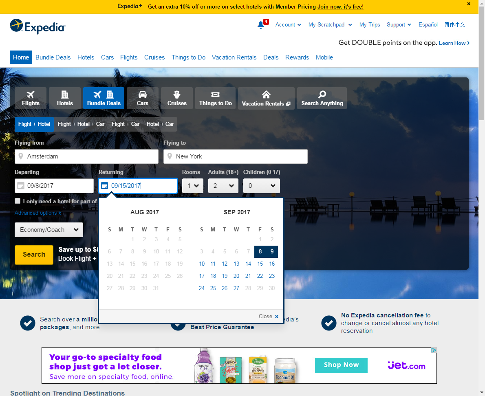
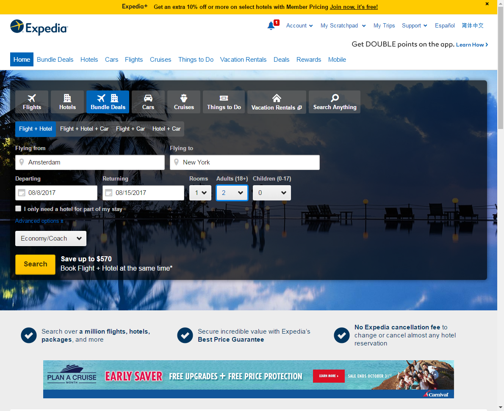

This page shows the same test twice: once using the heuristics in BrowserTest, and then using technical selectors. In both cases we will be booking a trip using Expedia. Because Expedia is not the fastest of sites, both scripts also showcase that BrowserTest waits for elements to appear, without the need for explicit 'wait' operations. Unfortunately the speed of Expedia also means this page is quite slow to complete.
We believe this comparison will highlight the benefits of using the heuristics over technical selectors. The result is a more readable (and maintainable) test without the need for custom code (like 'page objects') or extensive 'scenario libraries' just to make test scripts readable. Tests using the heuristics are easier to write, to understand, and do not require a completed implementation before they can be written.
Some common setup
| scenario | open Expedia.com | |
| seconds before timeout | 20 | |
| open | http://expedia.com | |
| set browser width | 1200 | |
| note | Expedia might route us to a localized version of the site |
|
| show | click if available | link=Continue to the U.S. site at Expedia.com |
| scenario | cleanup for next test |
| note | Cleanup for fresh start of next test |
| close tab | |
| clear local storage | |
| delete all cookies | |
Heuristics Based
The heuristics based test is something you can create based on a functional understanding of the application (e.g. the wireframes of an application). This can be done before, or in parallel with implementation of the application. Furthermore this also makes for more robust tests as most technical changes will not require maintenance re-work on the test set due to the heuristics. The only changes that directly impact the tests, are changes made in the customer's journey.
In this example we will show a test attempting to use Expedia.com to look for a flight, and a suite in a nice hotel, for a trip to New York making use of BrowserTest's heuristics to identify controls in the application. These heuristics allow use to use the texts displayed on the screen, or the descriptions provided to assist people with visual impairments (e.g. screen readers).
This version shows a test can be understood, and even written, by people without deep technical knowledge of HTML and various ways elements can be selected using Selenium.
| storyboard | browser test | |||||||||||||||||||||||||
| open Expedia.com | ||||||||||||||||||||||||||
| ||||||||||||||||||||||||||
| enter | Amsterdam | as | Flying from |  | ||||||||||||||||||||||
| enter | New York | as | Flying to |  | ||||||||||||||||||||||
| enter | 07/8/2017 | as | Departing |  | ||||||||||||||||||||||
| enter | 07/15/2017 | as | Returning |  | ||||||||||||||||||||||
| select | 2 | as | Adults |  | ||||||||||||||||||||||
| note | Searching may take a while so we set a longer timeout |
|||||||||||||||||||||||||
| seconds before timeout | 40 | |||||||||||||||||||||||||
| click | Search | |||||||||||||||||||||||||
| wait for visible Timed-out waiting (after 40s). |
Start by choosing your hotel | Test not run | ||||||||||||||||||||||||
| click Test not run | Broadway - Times Square | in | Neighborhood | Test not run | ||||||||||||||||||||||
| click Test not run | Guest Rating | Test not run | ||||||||||||||||||||||||
| click Test not run | The Peninsula New York | Test not run | ||||||||||||||||||||||||
| switch to next tab Test not run | Test not run | |||||||||||||||||||||||||
| note | The next two actions make use of the accessibility features of Expedia (i.e. its screen reader support) |
|||||||||||||||||||||||||
| click Test not run | Next image | Test not run | ||||||||||||||||||||||||
| click Test not run | Show all Rooms & Rates | Test not run | ||||||||||||||||||||||||
| click Test not run | Select Junior, Executive Suite | Test not run | ||||||||||||||||||||||||
| wait for visible Test not run | Now select your departing flight | Test not run | ||||||||||||||||||||||||
| cleanup for next test | ||||||||||||||||||||||||||
| ||||||||||||||||||||||||||
{kind=link}
{kind=link}
{kind=link}
{kind=link}
{kind=link}
{kind=link}
{kind=link}
{kind=link}
{kind=link}
{kind=link}
{kind=link}
{kind=link}
Technical Selector Based
The test using technical selectors require knowledge on the various way an element can be selected using Selenium and can only be created after implementation, because only then will implementation details like ids and classes be known. Writing tests using technical selectors takes quite a bit of puzzeling through the site's HTML and therefore creation of a test using this approach takes more time. Furthermore, technical changes without real end-user impact, will probably require maintenance effort to ensure the test keeps working. On the other hand: the execution time of this type of test will be a bit shorter than for the heuristics one (especially in other browsers than Chrome), as BrowserTest does not have to try various options to locate elements, the test's authors have done that work.
We will now perform the same test as the previous one, verifying a hotel room can be selected to be booked using Expedia.com. But this time controls are identified using 'technical selectors' instead of using heuristics.
Although the identifiers used inside Expedia's HTML are quite descriptive, this test is not as easy to understand as the previous one. Using technical selectors also makes the test more fragile: a change in identifier or page structure will probably mean the element can no longer be found.
| storyboard | browser test Test not run | ||||||||||||||||||||||||
| open Expedia.com | |||||||||||||||||||||||||
| |||||||||||||||||||||||||
| enter Test not run | Amsterdam | as | id=package-origin | Test not run | |||||||||||||||||||||
| enter Test not run | New York | as | id=package-destination | Test not run | |||||||||||||||||||||
| enter Test not run | 07/8/2017 | as | id=package-departing | Test not run | |||||||||||||||||||||
| enter Test not run | 07/15/2017 | as | id=package-returning | Test not run | |||||||||||||||||||||
| select Test not run | 2 | as | id=package-1-adults | Test not run | |||||||||||||||||||||
| seconds before timeout Test not run | 40 | Test not run | |||||||||||||||||||||||
| click Test not run | id=search-button | Test not run | |||||||||||||||||||||||
| wait for visible Test not run | id=packageSearchTitle | Test not run | |||||||||||||||||||||||
| click Test not run | id=id_NeighborhoodRegionName800077 | in | id=neighborhoodContainer | Test not run | |||||||||||||||||||||
| click Test not run | link=Guest Rating | Test not run | |||||||||||||||||||||||
| click Test not run | partialLink=The Peninsula New York | Test not run | |||||||||||||||||||||||
| switch to next tab Test not run | Test not run | ||||||||||||||||||||||||
| click Test not run | css=.image-slider-control.next | Test not run | |||||||||||||||||||||||
| click Test not run | id=show-more-rooms | Test not run | |||||||||||||||||||||||
| click Test not run | xpath=//span[text()='Select Junior, Executive Suite']/../.. | Test not run | |||||||||||||||||||||||
| wait for visible Test not run | id=BYOT-DepTitle | Test not run | |||||||||||||||||||||||
| cleanup for next test | |||||||||||||||||||||||||
| |||||||||||||||||||||||||
A script using these selector does not have to be as 'technical' as the example above. FitNesse's scenario's[?] may be used to provide a layer of abstraction on top of the actual selectors. You might also want to use custom Java code to provide a similar abstraction. But either of these approaches will also introduce an extra layer of complexity to be maintained, and understood, as part of the test set.
Showing the same test using these two approaches on a single page makes it clear why we believe the heuristics provide a lot of added value. But in writing tests you are not limited to using only the heuristics: the technical selectors are at your disposal. Even in a single test one can combine the two approaches. Use the approach that suites your testing needs!